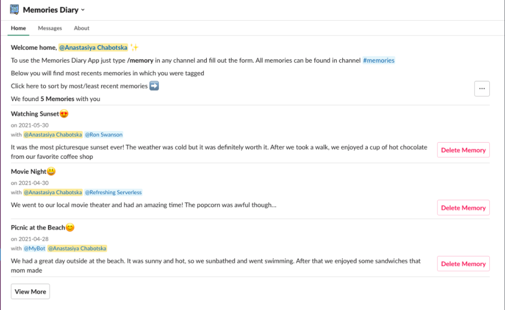
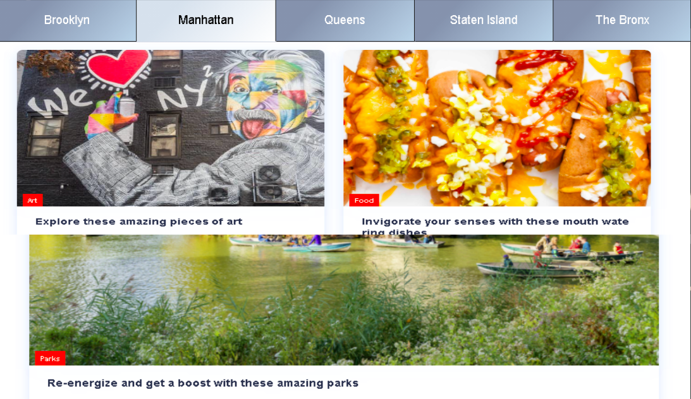

Memories Diary is an alternative to a paper journal but within a slack workspace. It allows you to save your most memorable moments that you want to remember. To do that, type a command /memory in any channel, fill out a quick form with details, and go to app home to see it!
Tech Stack:
Yorkify is your one true guide and companion for an enjoyable day in the wonderful state of New York. Not just your average travel app, Yorkify provides the best places to visit on your trip, based on user feedback and a growing community of people who wish to share hotspots with friends and family
Tech Stack: